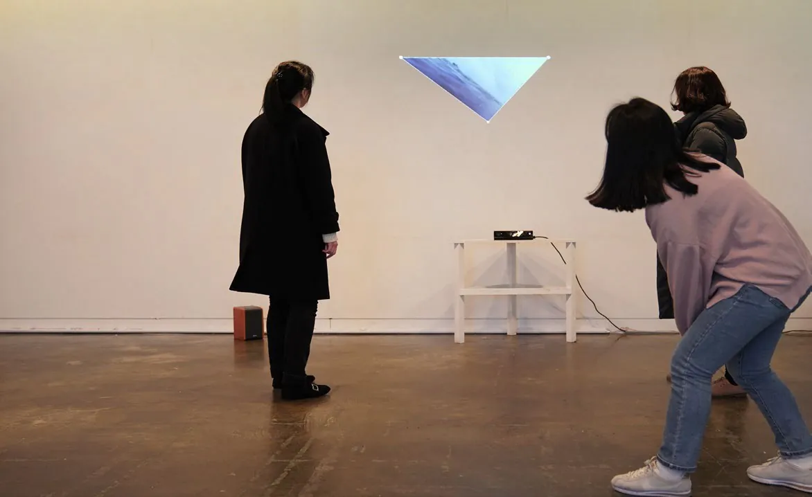
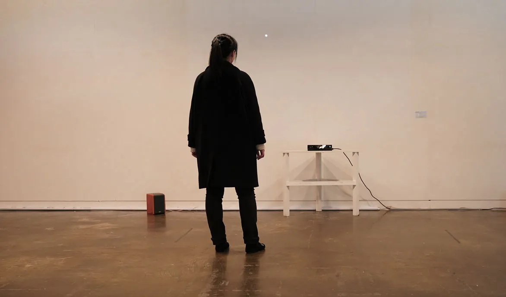
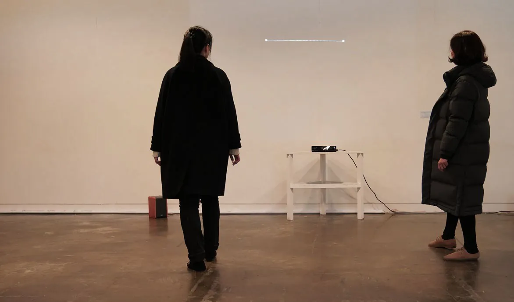
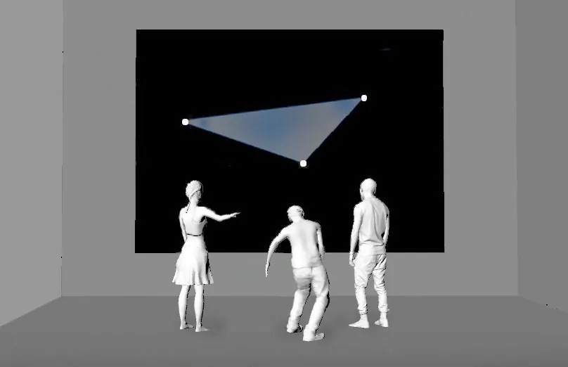

Making a Window
Interactive installation, 1920 × 1080 px, 2020
Master’s graduation project, Yonsei University Graduate School of Communication.
- Shown at
- “Transaction in Interactive Art”, research exhibition, Yonsei University, Seoul, 2020
- Materials
- Kinect, PC, wall projection
- In collaboration with
- Hyun Seung-cheol (technical support)

Making a Window explores the concept of trans-action in art and invites unpredictable social interaction between participants.
A Kinect camera reads the facial coordinates of the people in front of the wall, and Unity displays one or two points according to their number and position. When three points align, the system shifts into video output and reveals the final form of the work.


